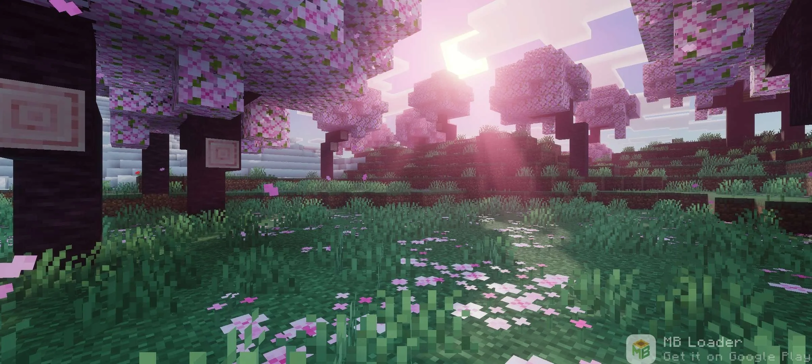
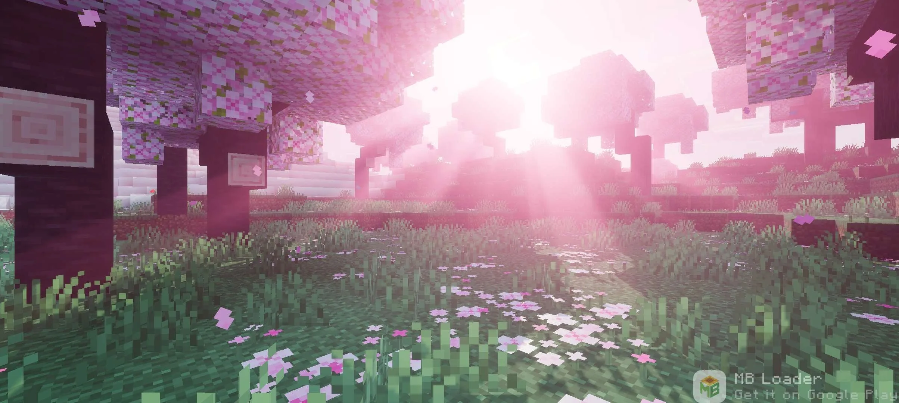
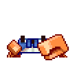

TOP 1 Vibrant Visuals Optimizer?§c§lWAJIB PAKAI Aplikasi MB LOADER, Levi launcher, Ambient atau Flarial Client Untuk Android, MC PATCH TIDAK DIDUKUNG!, §rPastikan Deferred Render Distance Dapat di Set ke 1 Chunks itu artinya Raiden Visuals sudah berfungsi, Paket ini bukan shader melainkan Deferred Configuration.
TOP 1 Vibrant Visuals Optimizer? TERIMA KASIH SUDAH SUPPORT KREATOR DENGAN MEMBELI RAIDEN VISUALSNYA. §c§lWAJIB PAKAI Aplikasi MB LOADER, Levi launcher, Ambient atau Flarial Client Untuk Android, MC PATCH TIDAK DIDUKUNG!, §rPastikan Deferred Render Distance Dapat di Set ke 1 Chunks itu artinya Raiden Visuals sudah berfungsi.
Raiden Visuals adalah custom deferred configuration yang dapat mengoptimalkan performa vibrant visuals berkali kali lipat pada minecraft bedrock edition, untuk edisi VIP+ memiliki custom shader renderdragon untuk meningkatkan performa lebih jauh lagi serta memperbagus visual tanpa mengorbankan FPS!.
Keunggulan
Mengoptimalkan Bayangan Pada Vibrant Visuals.
Mengoptimalkan Refleksi Ruang Layar Pada Vibrant Visuals.
Mengoptimalkan Point Light Beserta Bayangan Pada Vibrant Visuals.
Mengoptimalkan Kabut Volumetrik Pada Vibrant Visuals.
Memperluas Opsi Jarak Render (Menjadi 1-256 Chunks).
Menambahkan FX Motion Blur (VIP+).
Menambahkan FX Chroma Abberation (VIP+).
Memperbarui Kabut Volumetrik Menjadi dapat dilihat segala arah dengan godrays lebih panjang (VIP+).
Pantulan dibuat jauh lebih bersih, bening dan tajam (VIP+).
Bayangan Lebih Keras dan tajam (VIP+).
Menambahkan efek becek (VIP+).
Menambahkan efek genangan air (VIP+).
Efek Enchant menyala di ruangan gelap (VIP+).
Perbandingan Visual: Vibrant Visuals Default vs Raiden Visuals VIP+ 2.4.5
Geser garis untuk membandingkan kedua tampilan.


Default Vibrant VisualsRaiden Visuals VIP+
Screenshot diambil menggunakan Strawberry Deferred 4.0 Rewrite. Raiden Visuals bekerja sama dengan Strawberry Graphics untuk mengembangkan Vibrant Visuals menjadi lebih baik bagi semua orang.
Tertarik dengan karya Strawberry Graphics? KunjungiDiscorddanYouTube.
Panduan Instalasi
ANDROID
Untuk sistem operasi Android, diperlukan aplikasi pihak ketiga seperti MB Loader, Levi Launcher, Ambient For MCPE, atau Flarial Client agar Raiden Visual dapat berfungsi.
Untuk Flarial Client, harus mengaktifkan fitur Shader Loader melalui Flarial shortcut (tombol mengambang dengan logo Flarial). Setelah mengaktifkan Shader Loader di Flarial Client, wajib restart Flarial Client agar Raiden Visuals dapat berfungsi.
WINDOWS
Untuk sistem operasi Windows atau Linux, cukup memindahkan folder "renderer" di dalam file mcpack yang diberikan, lalu tempelkan di lokasi.
Untuk Minecraft Bedrock versi stable, buka isi folder "subpacks\OfficialFix" lalu pindahkan folder "renderer" nya ke C:\XboxGames\Minecraft for Windows\Content\data
Untuk Minecraft Bedrock versi preview, tidak perlu memindahkan renderer didalam folder subpacks, langsung pindahkan folder "renderer" nya ke C:\XboxGames\Minecraft Preview for Windows\Content\data
Changelog Terbaru
Pantau terus pembaruan dan perbaikan terbaru dari Raiden Visuals.
*Pembayaran aman diproses melalui Trakteer.id, bukan syarat wajib untuk mengunduh Raiden Visuals.
Persyaratan Sistem
Rekomendasi GPU Android untuk menggunakan Vibrant Visuals.
Minimum
RAM:
4 GB
CPU:
MediaTek Helio G85, G100, atau lebih tinggi.
GPU:
Adreno 640, Mali-G57, Mali-G68
Direkomendasikan
RAM:
8 GB
CPU:
Snapdragon 6 Gen 1, Dimensity 7050, atau yang lebih tinggi.
GPU:
Adreno 740, Mali-G715, Mali-G720
Pengecekan GPU untuk android
Cek Kompatibilitas GPU HP-Mu:
Cek nama dan seri GPU HP-mu menggunakan aplikasi DevCheck, AIDA64, CPU-Z, atau Debug Text di Minecraft versi Beta.
Tier 1 dan Tier 2 tidak kompatibel, Tier 3 belum kompatibel untuk saat ini, Tier 4 sudah kompatibel, Tier 5 pasti kompatibel.
Jika GPU Anda masuk di Tier 3 tapi Vibrant Visuals tidak dapat digunakan maka sebentar lagi akan kompatibel di update minecraft selanjutnya.
Jika GPU Anda tidak terdaftar, maka kemungkinan besar tidak akan pernah kompatibel, solusi beli hp baru.
Tier 5 Adalah spek GPU tertinggi, sedangkan Tier 1 adalah spek GPU terendah.
Tier 1 Sama Tier 2 lebih kasihan sih. Akan sangat lama untuk dapat menggunakan Vibrant Visuals, mungkin tahun depan? Itupun dengan hasil visual dan performa yang lebih rendah.
Q&A
Q : Apakah Raiden Visuals dapat langsung dipasang?
Tidak langsung. Metode pemasangan bergantung pada platform: Android memerlukan launcher yang didukung, sedangkan Windows menggunakan folder renderer sesuai panduan. Untuk iOS, periksa catatan rilis edisi yang dipakai; HynisiOS tidak disarankan untuk VIP+ v2.5.1.
Q : Apakah kompatibel dengan Vibrant Visuals Pack lain seperti Strawberry dan Prizma?
A : Ya, tentu saja kenapa tidak?
Q : Apakah kompatibel dengan shader renderdragon seperti Mirai?
A : Ya, tapi hanya untuk edisi standard bukan yang VIP+
Bagaimana cara mengoptimalkan Vibrant Visuals di Minecraft Bedrock?
Gunakan konfigurasi yang sesuai dengan versi Minecraft dan platform, ikuti panduan pemasangan, lalu uji pengaturan grafis satu per satu pada dunia dan resolusi yang sama. Jika performa belum stabil, coba kurangi render distance atau resolusi. Hasil berbeda-beda tergantung GPU, perangkat, dan pengaturan.
Apakah Raiden Visuals pasti meningkatkan FPS?
Tidak ada peningkatan FPS yang dapat dijamin untuk semua perangkat. Raiden Visuals dibuat untuk mengoptimalkan konfigurasi Vibrant Visuals, tetapi hasil aktual bergantung pada GPU, CPU, resolusi, pengaturan, dan kondisi dunia Minecraft.
Apakah Raiden Visuals merupakan shader Minecraft?
Raiden Visuals adalah custom deferred configuration untuk pipeline Vibrant Visuals Minecraft Bedrock, bukan shader mandiri yang menggantikan kebutuhan Vibrant Visuals. Cara pemasangan bergantung pada platform dan edisi.
Versi Minecraft Bedrock apa yang kompatibel dengan Raiden Visuals VIP+ v2.5.1?
Catatan rilis VIP+ v2.5.1 menyebut kompatibilitas dengan Minecraft Bedrock versi 26.60. Periksa changelog terbaru untuk mengetahui kompatibilitas versi lain.
Apakah Raiden Visuals VIP+ v2.5.1 tersedia untuk Windows?
Ya. Raiden Visuals VIP+ kini tersedia untuk Windows mulai versi 2.5.1. Ikuti panduan Windows di halaman ini dan buat cadangan folder renderer sebelum mengganti file.
Proyek Raiden Visuals Sudah Tidak Sendiri lagi, Selama Hampir 3 Tahun sejak Raiden Visuals Tercipta hanya 1 orang yang mengerjakan proyek ini untuk mengembangkan konfigurasi deferred vibrant visuals dengan optimasi perbaiknya agar perangkat kelas bawah dapat merasakan peningkatan peforma, sekarang aku sudah tidak sendirian lagi, dengan segala hormat aku bisa menjadi bagian tim dari Proyek Strawberry Graphics Developer, kami akan selalu membuat inovasi baru untuk komunitas minecraft!
Cara Mengoptimalkan Vibrant Visuals di Minecraft Bedrock
Raiden Visuals adalah custom deferred configuration untuk Vibrant Visuals di Minecraft Bedrock, bukan shader mandiri. Panduan ini menjelaskan langkah dasar memasang dan menguji konfigurasi agar sesuai dengan perangkat Anda.
1. Periksa versi game dan edisi
Pastikan edisi dan versi Minecraft Bedrock sesuai dengan catatan rilis paket yang dipilih. Raiden Visuals VIP+ v2.5.1 mencantumkan kompatibilitas dengan Minecraft Bedrock 26.60. Versi lain dapat memiliki kompatibilitas berbeda.
2. Ikuti metode pemasangan sesuai platform
Di Android, gunakan launcher yang tercantum pada panduan instalasi. Di Windows, ikuti petunjuk pemindahan folder renderer dan cadangkan folder asli terlebih dahulu. Untuk iOS, periksa catatan rilis; HynisiOS tidak disarankan untuk VIP+ v2.5.1.
3. Pastikan konfigurasi aktif
Ikuti petunjuk launcher dan game untuk memeriksa apakah konfigurasi berhasil dimuat. Pada paket ini, Deferred Render Distance yang dapat diatur ke 1 chunk merupakan salah satu petunjuk bahwa konfigurasi aktif.
4. Uji performa dengan pengaturan bertahap
Gunakan dunia, resolusi, dan kondisi pengujian yang sama. Ubah satu pengaturan setiap kali; jika performa belum stabil, coba kurangi render distance atau resolusi. Dampaknya bergantung pada perangkat dan pengaturan grafis.
5. Baca changelog dan masalah yang diketahui
Periksa changelog edisi yang digunakan sebelum memasang atau memperbarui. Cadangkan folder renderer sebelum menggantinya, dan tinjau masalah yang diketahui jika menemukan artefak visual atau fitur yang tidak bekerja.
Catatan performa
Tidak ada konfigurasi yang dapat menjamin kenaikan FPS pada semua perangkat. Minecraft Bedrock, GPU, CPU, resolusi, texture pack, launcher, dan kondisi dunia dapat memengaruhi hasil.
- Perbandingan Performa Vibrant Visuals Bawaan Vs Raiden Visuals
- Tutorial Pemasangan untuk Android pada masing-masing Launcher mengunakan Screenhots Step By Step
- Rekomendasi setingan opsi grafis Vibrant Visuals untuk performa dan kualitas
- Rekomendasi Vibrant Visuals Pack Agar lebih indah dan Immersive

Terima kasih banyak!
Terima kasih banyak sudah mendukung pengembangan Raiden Visuals dengan membeli Raiden Visuals VIP+! Kamu akan diarahkan ke halaman Trakteer untuk menyelesaikan pembelian. Sampai jumpa di dalam game!